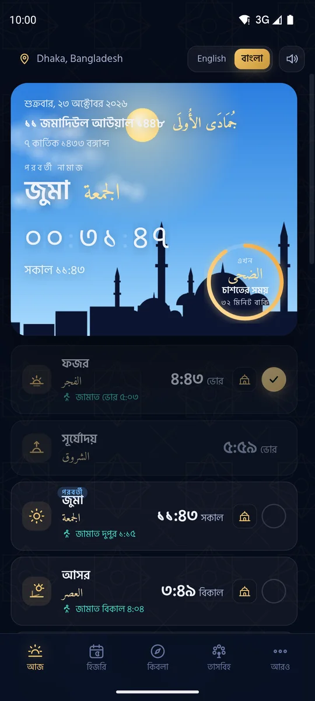

নামাজের সময়, আর আজান বাজবেই সময়মতো
আপনার শহরের নির্ভুল নামাজের সময়, দিনে পাঁচবার সুন্দর আজান, লাইভ কিবলা কম্পাস এবং বাংলাদেশের চাঁদ দেখা অনুযায়ী হিজরি তারিখ। বিজ্ঞাপন নেই। ট্র্যাকিং নেই। ইন্টারনেট ছাড়াই চলে।

পাঁচ ওয়াক্ত নামাজের জন্য সবকিছু
বাংলাদেশের জন্য তৈরি, সারা বিশ্বের মুসলিমদের জন্য।
আজান মিস হবে না
নির্ভুল অ্যালার্ম, শাওমি, স্যামসাং, ভিভো, অপো, রিয়েলমি ও টেকনোর ব্যাটারি সেটিং ঠিক করার "আজান চেক" এবং পরীক্ষামূলক আজান।
মসজিদের জামাত
মসজিদের জামাতের সময় দিন — রওনা দেওয়ার রিমাইন্ডার পাবেন আর নামাজের সময় ফোন নিজে থেকেই ভাইব্রেশনে যাবে।
বাংলাদেশের হিজরি তারিখ
সৌদি আরব নয়, বাংলাদেশের চাঁদ দেখা কমিটির ঘোষণা অনুযায়ী তারিখ, সাথে বাংলা সন।
লাইভ কিবলা কম্পাস
ফোন ঘোরালে কম্পাসও ঘোরে, আর সূর্য কখন কাবার দিকে থাকে তার নির্দিষ্ট সময়।
রমজানের সেহরি ও ইফতার
সেহরির অ্যালার্ম, ইফতারের সময় ও দোয়া, আপনার শহরের পূর্ণ রমজান ক্যালেন্ডার।
সফর মোড (কসর)
বাড়ি থেকে যথেষ্ট দূরে গেলে যোহর, আসর ও এশা কসরের কথা জানায়।
ফজরের জাগানো অ্যালার্ম
উঠে ছোট একটি তাসবিহ শেষ না করা পর্যন্ত ফজরের আজান বাজতে থাকে।
ভলিউম বাটনে তাসবিহ
ফোনের ভলিউম বাটনে জিকির গুনুন, নামাজের পর ৩৩·৩৩·৩৪ তাসবিহসহ।
নামাজ ট্র্যাকার
প্রতিটি নামাজ চিহ্নিত করুন, ধারাবাহিকতা দেখুন, কাজার পরিকল্পনা করুন।
সাধারণ প্রশ্ন
শাওমি, ভিভো, অপো বা স্যামসাং ফোনে আজান বাজে না কেন?
ব্যাটারি বাঁচাতে অনেক ফোন ব্যাকগ্রাউন্ডে অ্যাপ বন্ধ করে দেয়। ওয়াক্তের "আজান চেক" প্রতিটি বাধা খুঁজে বের করে ঠিক করার সেটিংস খুলে দেয়।
বাংলাদেশে নামাজের সময় কোন পদ্ধতিতে হিসাব হয়?
করাচি পদ্ধতি (ফজর ও এশা ১৮°) ও হানাফি আসর। মসজিদের সাথে মেলাতে প্রতিটি ওয়াক্ত মিনিট ধরে সমন্বয় করা যায়।
হিজরি তারিখ সৌদি আরবের চেয়ে আলাদা কেন?
বাংলাদেশে স্থানীয় চাঁদ দেখে মাস শুরু হয়, প্রায়ই সৌদি আরবের এক দিন পরে। ওয়াক্ত জাতীয় চাঁদ দেখা কমিটির ঘোষণা অনুসরণ করে।